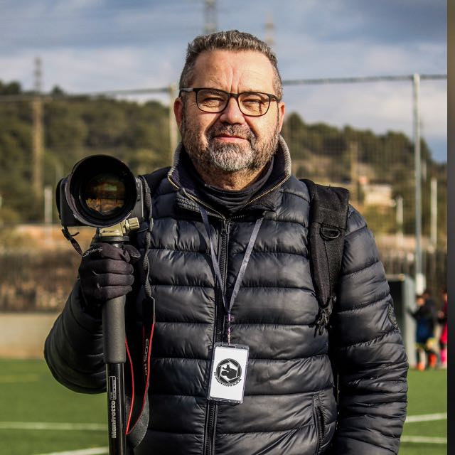

Rafa Castro

Me llamo Rafa Castro y he estado dedicando mi tiempo y esfuerzo a la fotografía durante muchos años.
Durante este tiempo, he participado en diversos cursos y talleres para mejorar mi técnica y habilidades. Como resultado, he desarrollado un enfoque artístico único y creativo en mis fotografías. Mi objetivo como fotógrafo es capturar momentos especiales y emociones en cada una de mis imágenes. Me encanta trabajar con diferentes sujetos y temas, desde retratos y paisajes hasta fotografía de eventos artísticos y deportivos.
En mi página web, encontrarás una selección de mis mejores trabajos. Si estás interesado en trabajar conmigo o simplemente quieres saber más sobre mi trabajo, no dudes en contactarme.